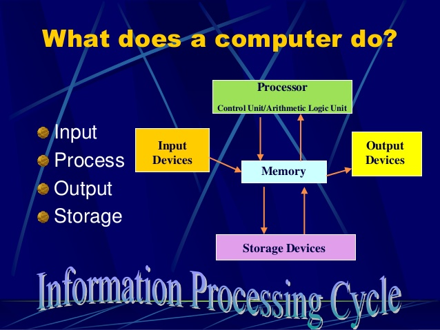

This course is designed to provide the students with a conceptual understanding of computer hardware and operating system software.
The range of computer types from clients to servers is covered with an emphasis on explaining types of applications. Job skills that are
common to all computer career environments as well as those that are unique to each type of system are discussed. Students alsodevelop
Internet search strategies and examine Internet ethics and responsibilities
| Business Communcations |
| Index |
| Term 1 |
| Term 2 |
| Term 3 |
| Term 4 |
| Term 5 |
| Term 6 |
| Term 7 |
| Term 8 |